珍稀花卉推荐 |
| 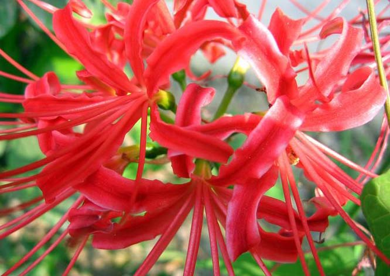 |
曼珠沙华 |
| 叶丛生，带形，长14–30厘米，宽1–2厘米，先端钝，上面深绿色，下面粉绿色，全缘，花茎先叶抽出，中空心，高20–40厘米。
园林中可做林下地被花卉，花境丛植或山石间自然式栽植。因其开花时光叶，所以应与其他较耐阴的草本植物搭配为好。 |
| 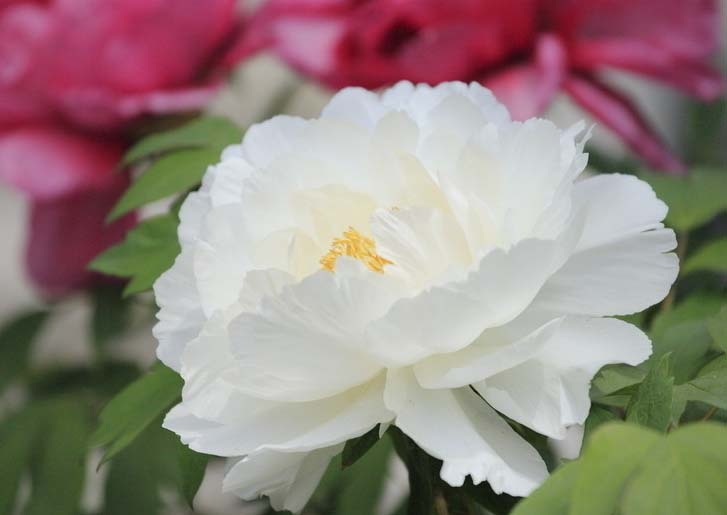 |
牡丹 |
| 花色泽艳丽玉笑珠香风流潇洒富丽堂皇素有花中之王的美誉在栽培类型中主要根据花的颜色可分成上百个品种牡丹品种繁多色泽亦多以黄绿肉红深红银红为上品尤其黄绿为贵牡丹花大而香故又有国色天香之称。 |
| 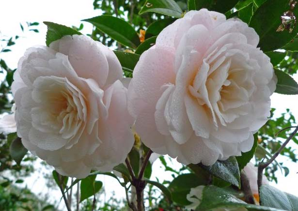 |
山茶花 |
| 又名：山茶、茶花，山茶科、山茶属植物属常绿灌木和小乔木。古名海石榴。有玉茗花、耐冬或曼陀罗等别名，又被分为华东山茶、川茶花和晚山茶。茶花的品种极多，是中国传统的观赏花卉，"十大名花"中排名第七，亦是世界名贵花木之一。 |
| 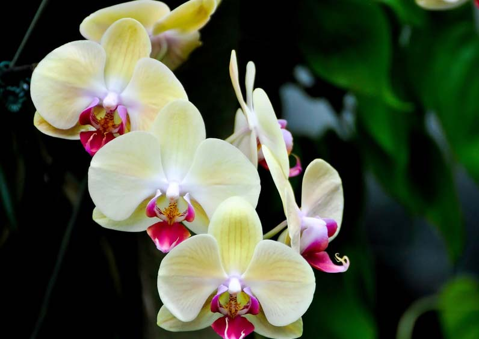 |
蝴蝶兰 |
| 原产于亚热带雨林地区，为附生性兰花。蝴蝶兰白色粗大的气根露在叶片周围，除了具有吸收空气中养分的作用外，还有生长和光合作用。新春时节，蝴蝶兰植株从叶腋中抽出长长的花梗，并且开出形如蝴蝶飞舞般的花朵，深受花迷们的青睐，素有"洋兰王后"之称。 |
| 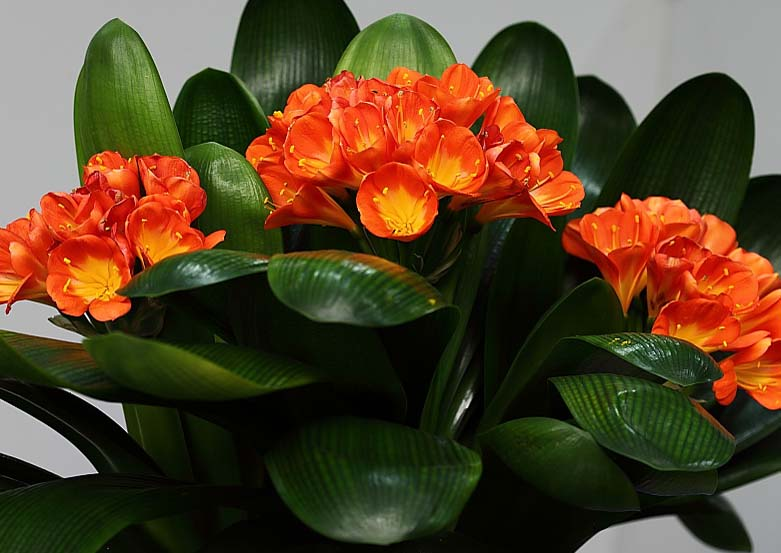 |
君子兰 |
| 别名剑叶石蒜、大叶石蒜，是石蒜科君子兰属的观赏花卉。是多年生草本植物，花期长达30-50天，以冬春为主，元旦至春节前后也开花，忌强光，为半阴性植物，喜凉爽，忌高温。喜肥厚、排水性良好的土壤和湿润的土壤，忌干燥环境。君子兰具有很高的观赏价值，中国常在温室盆栽供观赏。分株或种子繁殖。君子兰是长春市的市花。 |
| 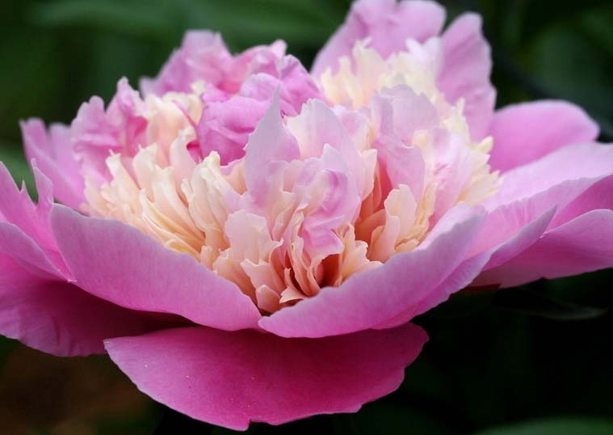 |
腊梅花 |
| 腊梅花为腊梅科植物腊梅的花蕾干燥又名雪里花。腊梅寒冬开花清香四溢庭院栽植最为适宜腊梅与南天竹搭配黄花红果是插花盆景的好材料。 |
| 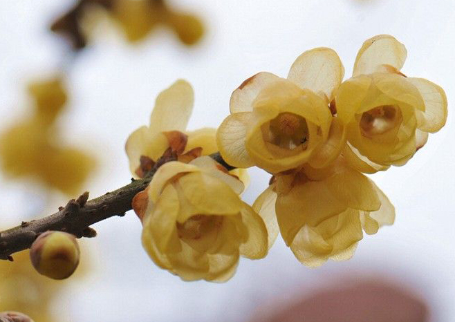 |
石斛 |
| 又名万丈须、吊兰、林兰、金钗华等。茎直立，肉质状肥厚，稍扁的圆柱形，长10~60厘米，粗达1.3厘米。药用植物，性味甘淡微咸，寒，归胃、肾，肺经。益胃生津，滋阴清热。用于阴伤津亏，口干烦渴，食少干呕，病后虚热，目暗不明。石斛花姿优雅，玲珑可爱，花色鲜艳，气味芳香，被喻为"四大观赏洋花"之一。 |
| 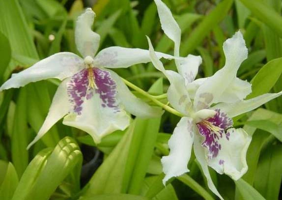 |
太阳花 |
| 喜冬暖夏凉、空气流通、阳光充足的环境，不耐寒，忌炎热。喜肥沃疏松、排水良好、富含腐殖质的沙质壤土，忌粘重土壤，宜微酸性土壤。在温暖地区能常年供应，是现代切花中的重要材料，供插花以及制作花篮，也可作盆栽观赏。 |
| 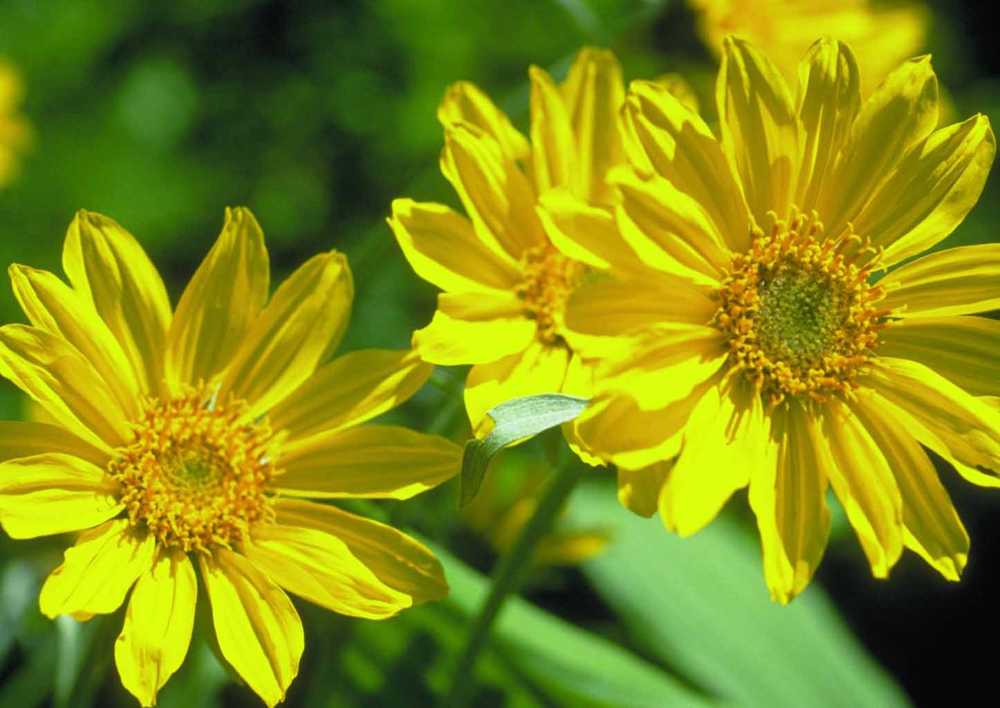 |
樱花 |
| 是蔷薇科樱属几种植物的统称，在《中国植物志》新修订的名称中专指"东京樱花"，亦称"日本樱花"。樱花品种相当繁多，数目超过三百种以上，其中自然野生种只有10余种，其他的则是通过园艺杂交所衍生得到的品种。樱花象征热烈、纯洁、高尚，被尊为日本国花。 |
| 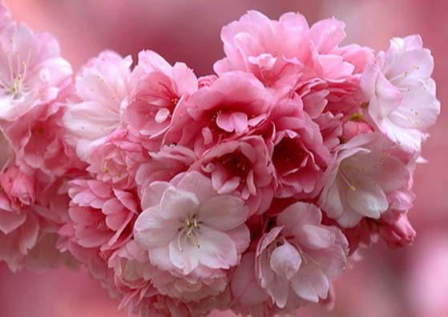 |
月季 |
| 被称为花中皇后，又称"月月红"，是常绿、半常绿低矮灌木，四季开花﹐一般为红色﹐或粉色、偶有白色和黄色﹐可作为观赏植物，也可作为药用植物，亦称月季。有三个自然变种，现代月季花型多样；其色彩艳丽、丰富，不仅有红、粉黄、白等单色，还有混色、银边等品种；多数品种有芳香。月季的品种繁多，世界上已有近万种，中国也有千种以上。 |
| 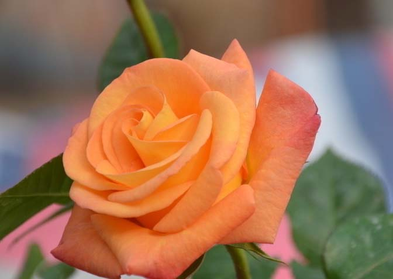 |
白玉兰 |
| 是玉兰花中开白色花的品种又名木兰玉兰等木兰科落叶乔木树高一般2～5米花白色大型芳香先叶开放，花期10天左右。中国著名的花木北方早春重要的观花树木上海市市花有2500年左右的栽培历史为庭园中名贵的观赏树原产中国中部现北京及黄河流域以南均有栽培古时多在亭台楼阁前栽植现多见于园林厂矿中孤植散植或于道路两侧作行道树北方也有作桩景盆栽现世界各地均已引种栽培又是晋江市市花。 |
| 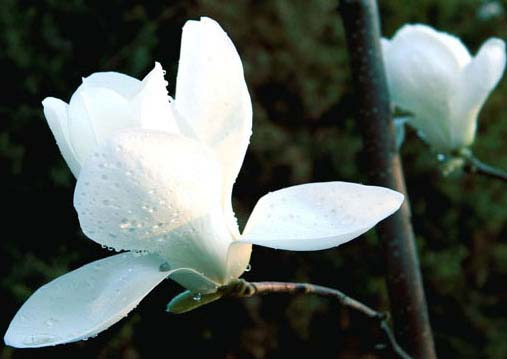 |
白玉兰 |
| 是玉兰花中开白色花的品种又名木兰玉兰等木兰科落叶乔木树高一般2～5米花白色大型芳香先叶开放，花期10天左右。中国著名的花木北方早春重要的观花树木上海市市花有2500年左右的栽培历史为庭园中名贵的观赏树原产中国中部现北京及黄河流域以南均有栽培古时多在亭台楼阁前栽植现多见于园林厂矿中孤植散植或于道路两侧作行道树北方也有作桩景盆栽现世界各地均已引种栽培又是晋江市市花。 |